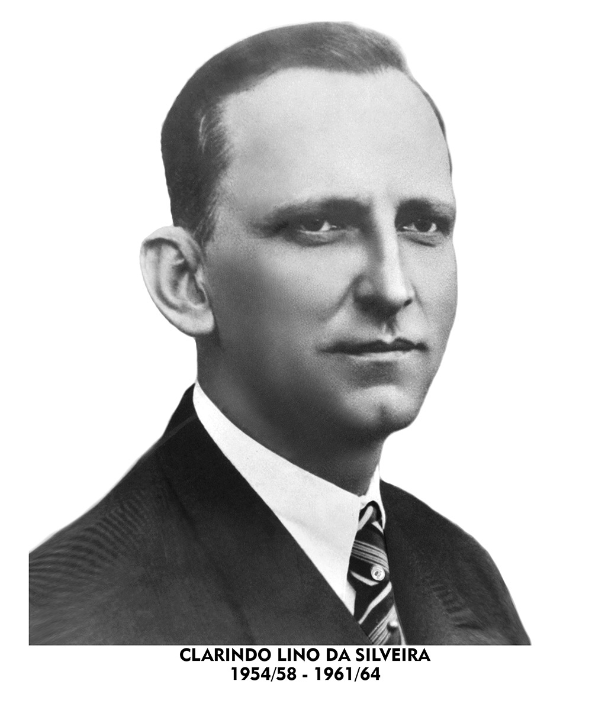
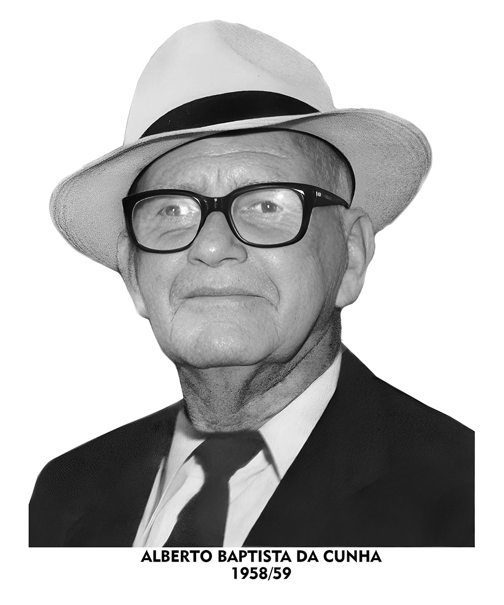
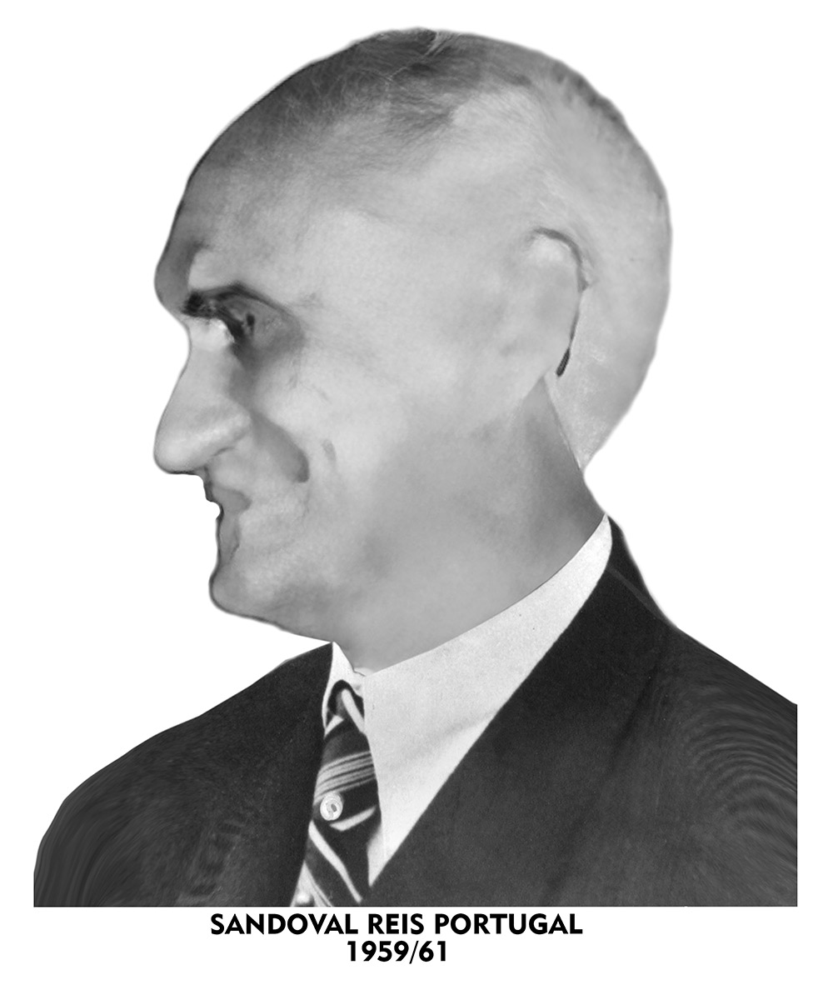
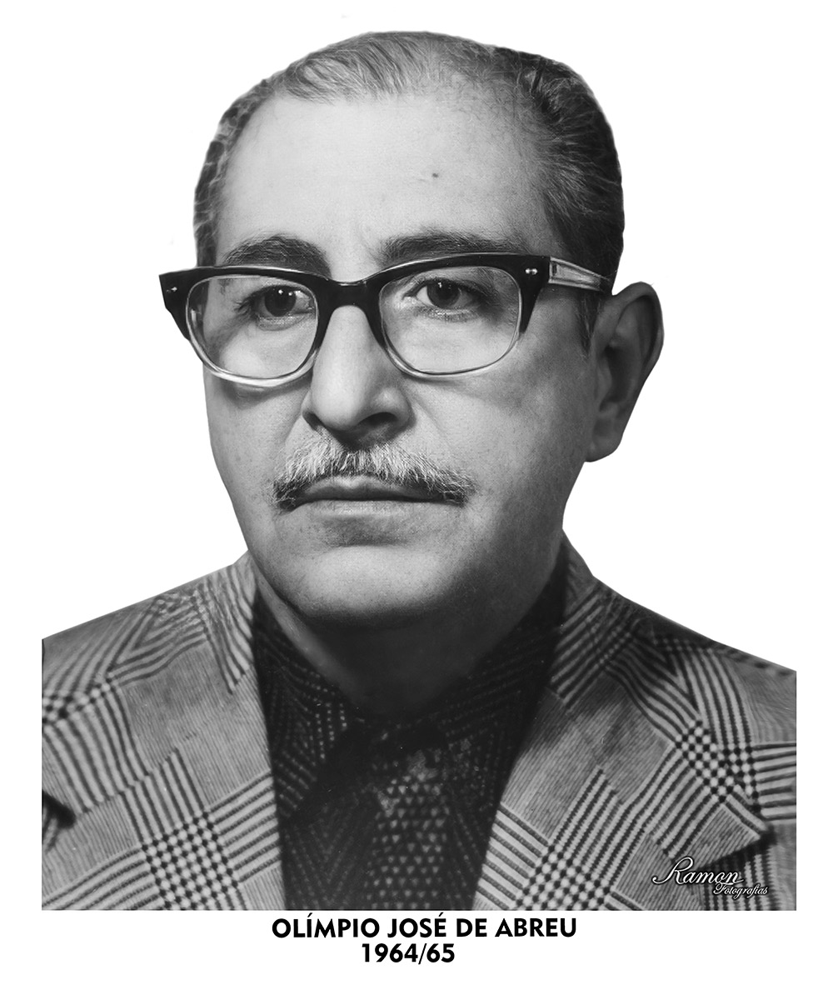
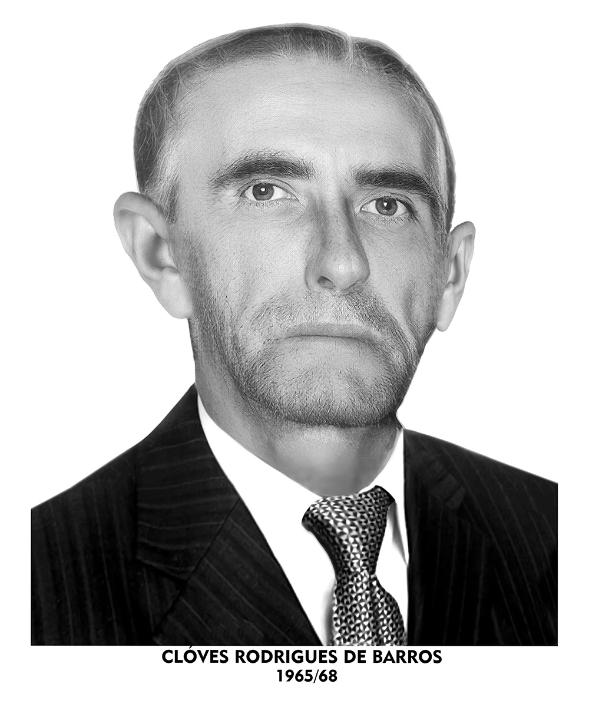
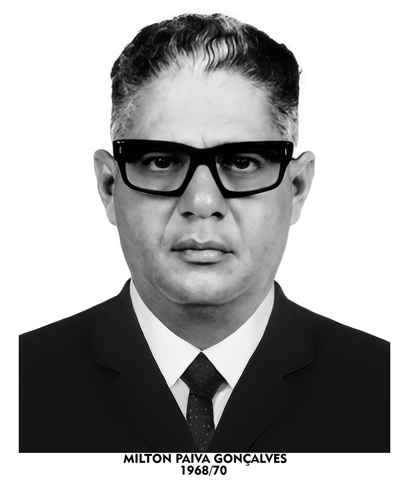

Ata de fundação
Nossa história
A Colamisul nasceu do sonho coletivo de produtores agropecuários que acreditavam na força da união para transformar realidades.
Em 24 de janeiro de 1954, em Mimoso do Sul (ES), foi fundada a Cooperativa de Laticínios de Mimoso do Sul com um objetivo claro: fortalecer o setor leiteiro local por meio da organização produtiva, do ganho de escala e da criação de uma estrutura justa, sustentável e próspera para todos.
Na época, o café ainda dominava a paisagem agrícola da região, mas a vocação leiteira começava a nascer em terras antes pouco aproveitadas. Com o crescimento da pecuária, surgia também a necessidade de dar destino à produção de leite e foi aí que a Colamisul teve sua operação iniciada, investindo em estrutura, logística e industrialização. A primeira usina de laticínios entrou em operação em 1959, marcando o início de uma trajetória que uniu campo e cidade, tradição e futuro.
Com a fundação da cooperativa, veio também o investimento em infraestrutura e logística. Em 1956, a instalação da usina de laticínios já estava quase concluída, e, a partir de 1959, a Colamisul passou a industrializar e comercializar leite e derivados em escala regional. Em pouco tempo, a produção local ganhou mercado no norte fluminense e, em 1961, praticamente todo o leite de Mimoso do Sul já era comercializado pela cooperativa. Desde então, a cooperativa cresceu de forma sólida.
Há mais de 70 anos, somos uma cooperativa, que atua lado a lado com produtores da Região Sul do Espírito Santo, oferecendo suporte técnico, estrutura e valorização justa da produção. Acreditamos que a origem importa, por isso, garantimos qualidade desde a fazenda até o ponto de venda, com rastreabilidade, cuidado e compromisso em cada etapa.
O que nos move é o comprometimento em construir um futuro mais justo, sustentável e saboroso para todos.
Laticínios que vem da cooperação, desde 1954.
Galeria de Presidentes
A trajetória da Colamisul é construída por pessoas que, ao longo dos anos, dedicaram seu trabalho ao fortalecimento da cooperativa.





